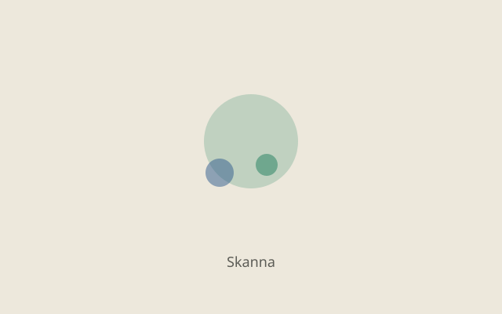
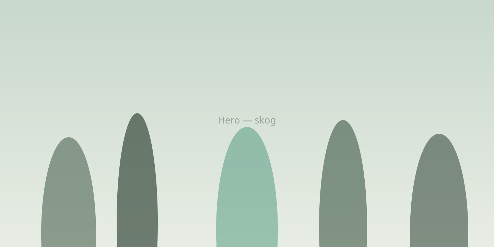
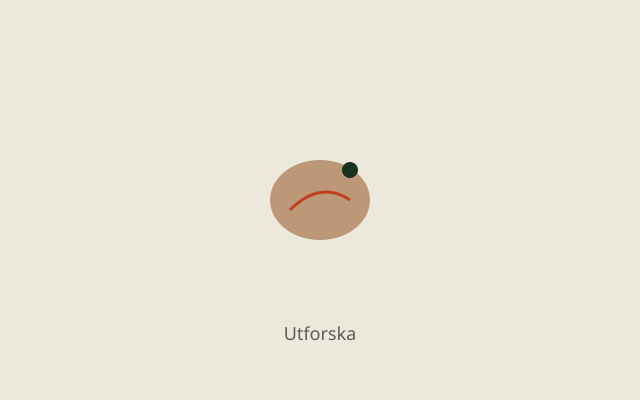

Skanna
Identifiera arter med AI — svenska namn, fakta och rödlistestatus direkt i appen.

ARTEN hjälper dig upptäcka arter omkring dig. Skanna växter, svampar, fåglar och djur — bygg din egen samling, utforska kartan och ta dig an naturens uppdrag.

Skanna
Identifiera arter med AI — svenska namn, fakta och rödlistestatus direkt i appen.

Samla
Bygg din BioDex med XP, nivåer och svit när du hittar nya arter.

Utforska
Se vad som observerats i närheten och på kartan — baserat på öppna observationsdata.
AI-identifiering på enheten. Med Pro får du förbättrad molnidentifiering för bättre träffsäkerhet.
Din personliga samling av växter, svampar, fåglar och däggdjur — filtrera och sortera som du vill.
Interaktiv karta med publicerade artobservationer i Sverige från öppen artdata.
Roliga mål och utmaningar som ger XP och bygger din svit.
Se vad som observerats i närheten baserat på din position.
Profil, XP och samling sparas på enheten. Logga in om du vill synka mellan enheter.
In English
ARTEN is a Swedish nature app: scan wildlife and plants, build your species collection, explore observation maps, and complete quests — powered by open biodiversity data and on-device plus cloud AI.
ARTEN är gratis att ladda ner. Konto är valfritt — logga in för att synka samling och XP.